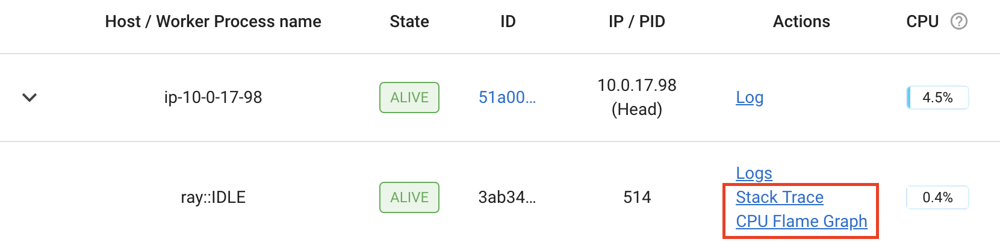

优化性能
Contents
优化性能#
无加速#
您刚刚使用 Ray 运行了一个应用程序，但它没有您预期的那么快。 或者更糟糕的是，它可能比应用程序的串行版本慢！ 最常见的原因如下。
核心数: Ray 使用多少个核心？当您启动 Ray 时，它将通过
psutil.cpu_count()确定每台机器上的 CPU 数量。 Ray 通常不会调度比 CPU 数量更多的并行任务。因此，如果 CPU 数量为 4 个，则您最多应该期待 4 倍的加速。物理 CPU 与逻辑 CPU： 您所运行的机器的 物理 核心是否少于 逻辑 核心？你可以使用
psutil.cpu_count()来检查逻辑核心数， 使用psutil.cpu_count(logical=False)来检查物理核心数。这在很多机器上很常见，尤其是在 EC2 上。 对于许多工作负载（尤其是数值工作负载），您通常无法期望比物理 CPU 数量更大的加速。小任务： 你的任务很小吗？Ray 为每个任务引入了一些开销（开销量取决于传递的参数）。 如果你的任务小于十毫秒，你将不太可能看到加速。 对于许多工作负载，你可以通过将它们批量在一起来轻松增加任务的大小。
周期变量: 您的任务是否有周期变量？如果您并行运行 10 个持续时间可变的任务， 则不应期望获得 N 倍的加速（因为您最终将等待最慢的任务）。 在这种情况下，请考虑使用
ray.wait开始处理先完成的任务。多线程库: 您的所有任务是否都尝试使用计算机上的所有内核？如果是这样，他们可能会遇到争用并阻止您的应用程序实现加速。 这对于某些版本的
numpy。 To avoid contention, set an 为了避免争用，请将环境变量MKL_NUM_THREADS（或等效的环境变量，取决于您的安装）设置为1。对于许多（但不是全部）库，您可以通过
top在应用程序运行时打开来诊断此问题。如果一个进程正在使用大部分 CPU，而其他进程正在使用少量 CPU， 则这可能就是问题所在。最常见的例外是 PyTorch，尽管它似乎正在使用所有核心，但仍需要设置torch.set_num_threads(1)来避免争用。
如果您仍然遇到速度变慢的情况，但上述问题均不适用，我们真的很想知道！ 创建 GitHub issue 并提交演示该问题的最小代码示例。
本文档讨论了人们在使用 Ray 时遇到的一些常见问题以及一些已知问题。如果您遇到其他问题， `请告诉我们`_。
使用 Ray 时间线可视化任务#
查看 如何在仪表板中使用 Ray Timeline 了解更多详细信息。
您还可以通过从命令行或Python API运行 ray timeline 而不是使用仪表板 UI 下载跟踪文件。
import ray
ray.init()
ray.timeline(filename="timeline.json")
仪表板中的 Python CPU 分析#
Ray dashboard 可让您通过单击活动 worker、actor 和作业的 “堆栈跟踪” 或 “CPU 火焰图” 操作来分析 Ray 工作人员进程。
{kind=link}
单击“堆栈跟踪”可使用返回 py-spy 当前堆栈跟踪示例 . 默认情况下，仅显示 Python 堆栈跟踪。要显示本机代码帧，请设置 URL 参数 native=1 （仅在 Linux 上支持）。
{kind=link}
单击“CPU Flame Graph”会获取许多堆栈跟踪样本，并将它们组合成火焰图可视化。此火焰图对于了解特定进程的 CPU 活动很有用。要调整火焰图的持续时间，您可以更改 URL 中的 duration 同样，您可以更改 native 参数以启用本机分析。
{kind=link}
分析功能需要安装 py-spy 。 如果未安装，或者二进制 py-spy 文件没有 root 权限，
仪表板会提示如何正确设置 py-spy ：
This command requires `py-spy` to be installed with root permissions. You
can install `py-spy` and give it root permissions as follows:
$ pip install py-spy
$ sudo chown root:root `which py-spy`
$ sudo chmod u+s `which py-spy`
Alternatively, you can start Ray with passwordless sudo / root permissions.
Note
在 docker 容器中使用 py-spy 时，您可能会遇到权限错误。要解决该问题：
如果您在 Docker 容器中手动启动 Ray，请按照 `py-spy 文档`_ 来解决。
如果您是 KubeRay 用户，请按照 KubeRay 配置指引 来解决。
使用 Python 的 cProfile 进行分析#
你可以使用 Python 的原生 cProfile profiling module 来分析 Ray 应用程序的性能。 与跟踪应用程序代码的每一行不同，cProfile 可以给出每个循环函数的总运行时间， 以及列出在受监视代码中进行的所有函数调用的调用次数和执行时间。
与上面的 line_profiler 不同的是，这个分析函数调用的详细列表
包括 内部函数调用和 Ray 内进行的函数调用。
然而，与 line_profiler，只需对应用程序代码进行最少的更改即可启用 cProfile（假设您要分析的代码的每个部分都定义为其自己的函数）。
要使用 cProfile，请添加导入语句，然后替换对循环函数的调用，如下所示：
import cProfile # Added import statement
def ex1():
list1 = []
for i in range(5):
list1.append(ray.get(func.remote()))
def main():
ray.init()
cProfile.run('ex1()') # Modified call to ex1
cProfile.run('ex2()')
cProfile.run('ex3()')
if __name__ == "__main__":
main()
现在，当您执行 Python 脚本时，每次对 cProfile.run() 的调用都会在终端上打印出一份经过分析的函数调用列表。
cProfile 输出的最顶部给出了 'ex1()' 的总执行时间：
601 function calls (595 primitive calls) in 2.509 seconds
以下是 'ex1()' 的函数调用的片段。大多数这些调用都很快，大约需要 0.000 秒，
因此感兴趣的函数是执行时间不为零的函数：
ncalls tottime percall cumtime percall filename:lineno(function)
...
1 0.000 0.000 2.509 2.509 your_script_here.py:31(ex1)
5 0.000 0.000 0.001 0.000 remote_function.py:103(remote)
5 0.000 0.000 0.001 0.000 remote_function.py:107(_remote)
...
10 0.000 0.000 0.000 0.000 worker.py:2459(__init__)
5 0.000 0.000 2.508 0.502 worker.py:2535(get)
5 0.000 0.000 0.000 0.000 worker.py:2695(get_global_worker)
10 0.000 0.000 2.507 0.251 worker.py:374(retrieve_and_deserialize)
5 0.000 0.000 2.508 0.502 worker.py:424(get_object)
5 0.000 0.000 0.000 0.000 worker.py:514(submit_task)
...
可以在 worker.py:2535(get) 处注意到 5 次对 Ray 的 get 的单独调用，每次调用都需要 0.502 秒。
同时，调用远程函数本身在 remote_function.py:103(remote) 处只需要 0.001 秒，因此不是 ex1() 的性能慢的原因。
使用 cProfile 分析 Ray Actor#
考虑到根据我们使用的 Ray 功能，cProfile 的详细输出可能会有很大不同， 让我们看看如果我们的示例涉及 Actor，cProfile 的输出可能会是什么样子（有关 Ray Actor 的介绍，请参阅我们的 Actor 文档)。
现在，我们不是在 ex1 中 5 次循环调用远程函数，而是创建一个示例，在 Actor 中 循环调用 5 次远程函数。
我们的 Actor 的远程函数再次只是休眠 0.5 秒：
# Our actor
@ray.remote
class Sleeper:
def __init__(self):
self.sleepValue = 0.5
# Equivalent to func(), but defined within an actor
def actor_func(self):
time.sleep(self.sleepValue)
回顾 ex1 的次优性，让我们首先看看如果我们尝试在单个 actor 中执行所有 五次 actor_func() 调用会发生什么：
def ex4():
# This is suboptimal in Ray, and should only be used for the sake of this example
actor_example = Sleeper.remote()
five_results = []
for i in range(5):
five_results.append(actor_example.actor_func.remote())
# Wait until the end to call ray.get()
ray.get(five_results)
我们在此示例中启用 cProfile，如下所示：
def main():
ray.init()
cProfile.run('ex4()')
if __name__ == "__main__":
main()
运行我们的新 Actor 示例，cProfile 的缩写输出如下：
12519 function calls (11956 primitive calls) in 2.525 seconds
ncalls tottime percall cumtime percall filename:lineno(function)
...
1 0.000 0.000 0.015 0.015 actor.py:546(remote)
1 0.000 0.000 0.015 0.015 actor.py:560(_remote)
1 0.000 0.000 0.000 0.000 actor.py:697(__init__)
...
1 0.000 0.000 2.525 2.525 your_script_here.py:63(ex4)
...
9 0.000 0.000 0.000 0.000 worker.py:2459(__init__)
1 0.000 0.000 2.509 2.509 worker.py:2535(get)
9 0.000 0.000 0.000 0.000 worker.py:2695(get_global_worker)
4 0.000 0.000 2.508 0.627 worker.py:374(retrieve_and_deserialize)
1 0.000 0.000 2.509 2.509 worker.py:424(get_object)
8 0.000 0.000 0.001 0.000 worker.py:514(submit_task)
...
实时证明，整个示例仍然需要 2.5 秒才能执行，或者说五次对 actor_func() 的调用在串行中运行的时间。
如果您回想一下 ex1，这种行为是因为我们在提交所有五个远程函数任务之后没有等待调用 ray.get()，
但是我们可以在 cProfile 的输出行 worker.py:2535(get) 上验证， ray.get() 只在最后调用了一次，用时 2.509 秒。
发生了什么？
事实证明，Ray 无法并行化这个示例，因为我们只初始化了一个 Sleeper actor。
因为每个 actor 都是一个有状态的 worker ，所以我们的整个代码始终在单个 worker 上提交和运行。
为了在 ext4 更好的并行化，我们可以利用每次对 actor_func() 的调用是独立的有时，创建五个 Sleeper actors。
这样，我们创建了五个可以并行运行的 workers，而不是创建一个只能一次处理一个 actor_func() 调用的单个 worker。
def ex4():
# Modified to create five separate Sleepers
five_actors = [Sleeper.remote() for i in range(5)]
# Each call to actor_func now goes to a different Sleeper
five_results = []
for actor_example in five_actors:
five_results.append(actor_example.actor_func.remote())
ray.get(five_results)
现在，我们的示例总共只需 1.5 秒即可运行：
1378 function calls (1363 primitive calls) in 1.567 seconds
ncalls tottime percall cumtime percall filename:lineno(function)
...
5 0.000 0.000 0.002 0.000 actor.py:546(remote)
5 0.000 0.000 0.002 0.000 actor.py:560(_remote)
5 0.000 0.000 0.000 0.000 actor.py:697(__init__)
...
1 0.000 0.000 1.566 1.566 your_script_here.py:71(ex4)
...
21 0.000 0.000 0.000 0.000 worker.py:2459(__init__)
1 0.000 0.000 1.564 1.564 worker.py:2535(get)
25 0.000 0.000 0.000 0.000 worker.py:2695(get_global_worker)
3 0.000 0.000 1.564 0.521 worker.py:374(retrieve_and_deserialize)
1 0.000 0.000 1.564 1.564 worker.py:424(get_object)
20 0.001 0.000 0.001 0.000 worker.py:514(submit_task)
...
使用 PyTorch Profiler 进行 GPU 分析#
以下是在使用 Ray Train 进行训练或使用 Ray Data 进行批量推理期间使用 PyTorch Profiler 的步骤：
按照 PyTorch Profiler 文档 记录 PyTorch 代码中的事件。
将 PyTorch 脚本转换为 Ray Train 训练脚本 或 Ray Data 批量预估脚本。 （与分析器相关的代码没有变化）
运行您的训练或批量推理脚本。
收集所有节点的分析结果（与非分布式设置中的 1 个节点相比）。
您可能希望将每个节点上的结果上传到 NFS 或 S3 等对象存储，这样您就不必分别从每个节点获取结果。
使用 Tensorboard 等工具可视化结果。
开发人员分析#
如果您正在开发 Ray Core 或调试某些系统级故障，分析 Ray Core 可能会有所帮助。在这种情况下，请参阅 Ray 开发人员分析。